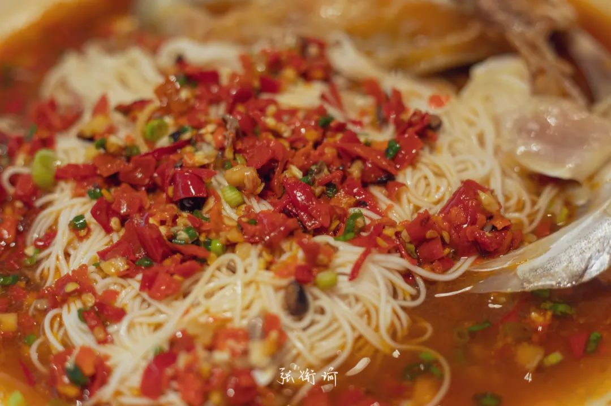

本文是张衔瑜第188篇推文
共计1882个字，2张图
坐在实验室外的走廊里，杯子上刻着“九鲜”字样的是下午托朋友带到实验室来的芋圆三合一。还剩最后一点。发挥专业素养，让剩余的明胶状芋圆和里边加的仙草摇晃成稳定的正螺旋，然后悉数喝下。有种虽然不是酒，也不存在壮行的豪迈感。事实上是给一天一个感叹号结尾。
这样的结尾多存在于那些粗糙组合的一天里。把不同地方的建筑材料都堆积到自己的生活中，也不管其中的力学结构。除非真正广普的培养基、毫无特异性可言的组分，否则其他工程料想是没有任何道理接受这样结构的。
过饱和，又析出。
这句话原本描述的是一个化学现象。饱和溶液比如食盐溶质，就意味着一杯盐水里面再放盐，这时候盐溶解和盐析出已经达到了动态平衡。所以，过饱和就是在动态平衡上，再往溶解盐的方向移动。
想到这个是因为，我们每每说现在的生活已经够难、够烦了，却实在地有更多杂七杂八的事情如潮汹涌去塞满空闲时间。好久以前，虽然也忘记了是哪天，就在公众号里开始写，不管到什么时候也不可能比现在更忙一点，因为现在已经忙到脱力了。但是也的确会更忙一些。目前尚不清楚是耐受能力的提高，还是什么别的原因。能观察到过饱和的程度在不断提高。可以给这些文字以更多的社会科学意义定义。
我们大可以给这些描述加上一些语焉不详的前置。比如你的人生就像这杯溶液，已经饱和了但还在不断添加新的溶质。于是一边析出晶体一边过饱和持续。也可以加别的。反正说出来都像是低级营销号在兜售新的内容，这届年轻人、你身边的人、是在干什么、如何看待。世界上本没有那么多恶心的词语，用的人多了，也就变得恶心了起来。把对人的恶心转嫁到对词语的恶心上，对词语是不道德的。要锤人就去锤人，吃这么多炸鸡算什么本事。
艺术，在形式上是离心的。即使说话一样，也不一定能想的一样。
口口声声yyds也不会品牌受众往年轻渗透
一字一句都加风的图标和.....的文字也不会让标题带感
上下的两句格言，可能出自完全不同的流派/主义
你理解的酵素，和我理解的酶也不一样
鼓吹为艺术而艺术，也就是提出了一种艺术的神学。
艺术可以换成其他的词：吃饭、学习、爱情、旅游、活着。一切先验的装扮都可以加入此中。
什么时候才能去听沼泽乐队的现场啊？
公交车上的我：好像听到别人在说我感兴趣的内容“鹊桥是违章建筑”
手：按下音乐暂停键。
今天在食堂，意外地耳机不工作了。不工作就不工作了吧，然后我点开了播放。于是让旁边的人听了文雀的几个音节。因为不是梵音，想来感化能力没有那么强。
很多很多
求算一个能约化到的最大公约数不知道要多少算力/脑力，还不如不说。累是总是能感觉到的。最近时常在深夜觉得又热又困，尽管空调一直在往低开。没有刻意去算筹明天要做点什么。很多事情，远近你我Ta全都在眼前。
泰餐窗口打饭的男女，眼睛都笑成一条线了我还没听懂他们在说什么。
韩剧《Melo体质》：
人生就是那么回事吗，怀抱着少许美好时光的记忆，去挺过大部分必然艰难的时光。虽然没法否认这点，但我非常喜欢创造着那少许美好时光的现在。像这样跟你们闲聊，光是这样就特别开心。
当不可证伪属性开始侵蚀理性正义，听人说话就像是被迫穿上一条被fart崩坏了的裤子一样奇怪。在公众场合被人叫网名的那种奇怪。
清洁工用束口绳关闭了垃圾袋的工作情境。小嘴抹了史丹利的人，脸红得像个泡泡茶壶。
昨天梦到一个认识的小老弟在静脉注射打着点滴，哭着跟我说想吃肉。于是我跑到厨房，好多人都在厨房里忙进忙出，备菜、炒菜、端菜传菜。认识的长辈拿着陶制的碗回到餐厅，牛油果绿的桌布上泼满了肉汁琼脂。
最近读的书是：
忧郁的热带克洛德·列维·斯特劳斯
不可能乔治·巴塔耶
悉达多赫尔曼·黑塞
摄影小史本雅明
艺术“裂变”时代的文化美学 ——本雅明艺术美学理论研究张文杰
前面的书都还不错：人类学、先锋艺术、印度教与佛教小说、影视传播中的美学原理。悉达多可能比较像之前在我的选书口味里最相适的一本。最后一本最无聊，冠名“中国艺术学文库”实在是让这个名字掉价不少，并且增添一点自己的自信：怎么这样的东西都能放到文库里面来凑数。
朋友说漫画、小说、追的剧完结了，觉得很惆怅。这种惆怅我已经好久没有体会到。就连电影都已经好久没有看了。应该找一点除了吃饭之外的娱乐活动来。
在食堂点了一碗炸酱面。过了一会儿后师傅叫号，端了一碗红烧牛肉面给我，说下错了。并问我吃不吃红烧牛肉面。我觉得随便。反正生活也没准备按照既定套路出牌。
喝完芋圆三合一之后，回实验室清理东西，准备回。很奇怪，早上明明背到实验室好好地一个满满当当的包，晚上还是这么多东西的时候就拉不上拉链了。习惯性躺平，打算分出一些东西到手上的观念，以及在继续倒腾拉链的手。
交出最近的图
